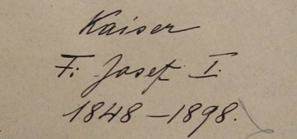

Wirtschftsplan des Revieres Gross-Mohrau (Velká Morava)
Bei der Geschichte des Revieres wäre noch die zur bleibenden Erinnerung an das 40-jährige Regierungsjubiläum Sr. Durchlaucht des Fürsten und Herrn vollführte Anlage der „Fürst Johannes-Eichen-Gruppe“ erwähnenswert. Dieselbe wurde im heutigen W.T.28 im Frühjahre 1898 in einer absoluten Meereshöhe von 805 m angelegt, welcher Wirtschaftsteil auch nach dieser Eichengruppe benannt wurde. In derselben sind 20 Stück Stieleichen (Quercus pedunkulata) und 20 Stück Traubeneichen (Quercus sessiliflora), zusammen 40 Stück (mit Bezug auf die 40-jährige Regierungsdauer) und 18 Stück Roteichen (Quercus rubra), im Ganzen daher 58 Stück, (welch' letztere Zahl (18) das Alter Sr. Durchlaucht beim Regierungsantritte bedeutet, während die Gesammtzahl (58) das damalige Alter Sr. Durchlaucht angibt) aufgenommen.
In dieser Eichengruppe befindet sich, an einen künstlichen Steinhaufen angelehnt, eine Steinplatte mit folgender Inschrift:

Durch die Auswahl der drei zur Auspflanzung bestimmten Eichenarten sollte gleichzeitig eine wissenschaftliche Frage zur Lösung kommen, nämlich vergleichende Beobachtungen über das Gedeihen dieser Eichenarten auf den verschiedensten Standorten und Seehöhen vorzunehmen und dadurch wichtige waldbauliche Erfahrungen für die Eichenzucht zu sammeln. - Die Eichengruppe ist mit Latten umfriedet und die linke Seite der Umfriedung mit Douglastannen, die rechte mit Weymouthskiefer bepflanzt.
Aber auch ein zweiter, für jeden guten Patrioten wichtiger Tag wurde im Reviere verewigt. - Zur Erinnerung an das 50-jährige Regierungsjubiläum Sr. Majestät des Kaisers und Königs Franz Josef I wurde im W.T. 8, unmittelbar vor der Wilhelminenhütte, eine Kaiser-Ahorngruppe gepflanzt u. z.:
5 Stück Berg-Ahorne (Acer pseudoplatanus) und wurde in dieser Gruppe, zur bleibenden Erinnerung ein Stein mit folgender eingemeisselter Inschrift versehen:

Dieselben Zwecke verfolgen auch die im selben Jahre gepflanzten „Kaiserin Elisabeth-Ahorne“ im W.T. 42, unmittelbar unterhalb der neuen Marchthalstrasse, zur bleibenden Erinnerung an die durch ruchlose Mörderhand verschiedene Kaiserin. Auch in dieser Gruppe befindet sich ein Gedenkstein mit folgender Widmung:

Außer den pietätvollen Motiven, wird die Beobachtung dieser in allen Revieren der fürstlichen Regie (Elisabethahorne nur in den Revieren des Forstamtsbezirkes Hannsdorf) in gleicher Zahl angelegten Gruppen, wissenschaftlich interessante Ergebnisse liefern.